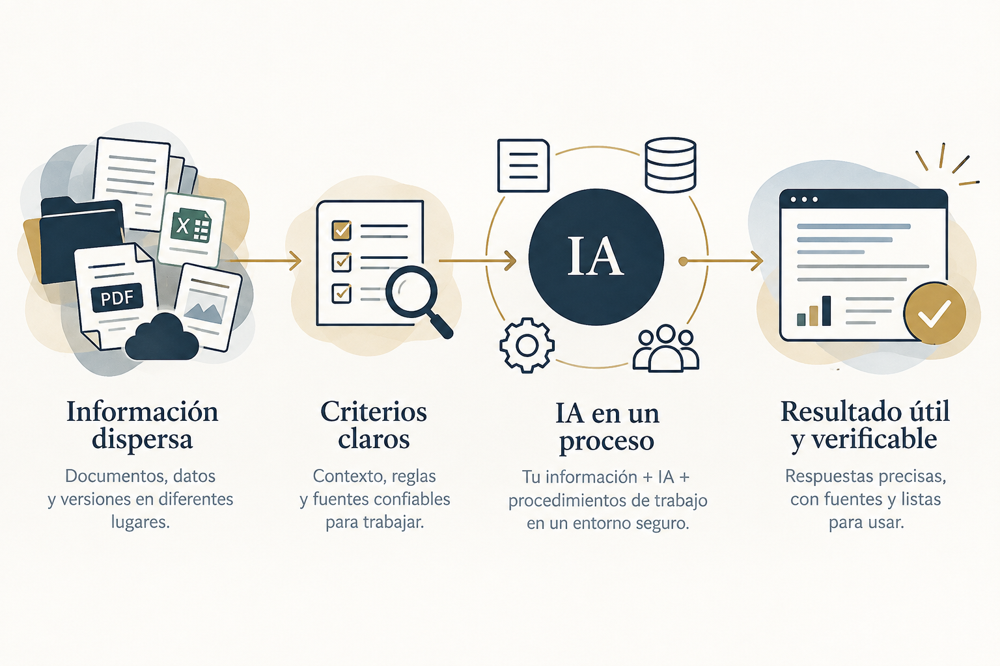

Descubre qué necesita tu equipo para pasar de hacer preguntas en un chat a trabajar con información, documentos y criterios de forma organizada y confiable.
QUIERO PARTICIPARTu equipo puede estar usando inteligencia artificial todos los días. Pero cuando una respuesta depende de un documento específico, la versión vigente de una política, los datos correctos de un cliente o un criterio interno, escribir un buen prompt puede no ser suficiente.
Antes de pedirle a la IA una respuesta, hay que saber con qué información debe trabajar, qué fuente corresponde, qué hacer si falta un dato y quién valida el resultado.

La información existe, pero hay que buscarla entre carpetas, archivos o documentos.
Distintas personas consultan o utilizan la misma información de maneras diferentes.
Hay documentos que cambian de versión y es importante saber cuál corresponde.
Se llenan una y otra vez formatos similares con datos diferentes.
Tu equipo ya usa ChatGPT, Gemini u otra IA, pero cada persona trabaja a su manera.
Si reconociste una o varias, este webinar te va a interesar.
Durante el webinar aprenderás a organizar una tarea con IA antes de pedirle que la ejecute. Conocerás la metodología SAVIA y la aplicarás a un caso concreto.
Verás qué cambia cuando una solicitud aparentemente sencilla depende de datos, documentos, versiones y criterios distintos.
Después exploraremos qué ocurre cuando esa misma tarea deja de ser ocasional y comienza a repetirse dentro de una organización.
Y verás una demostración de cómo este tipo de trabajo puede llevarse a un entorno privado de IA diseñado para operar con información y documentos de una organización.
Durante la sesión irá del caso y la metodología a una demostración concreta, para que puedas distinguir qué puede resolverse con una conversación de IA y cuándo conviene estructurarlo como un proceso de trabajo.
Aprende a pasar de una consulta aislada con IA a un flujo de trabajo sustentado, repetible y revisable.
La participación es gratuita. Al registrarte recibirás los datos de acceso al webinar.
Importante: no necesitas compartir documentos ni información confidencial de tu empresa durante la sesión.
No. El webinar está enfocado en la lógica de trabajo y en cómo organizar una tarea para obtener resultados útiles y revisables.
No solamente. Primero trabajarás sobre un método aplicable a tareas con IA. Después verás una demostración de cómo ciertos procesos recurrentes pueden llevarse a un entorno privado.
No. Los ejercicios se realizan con un caso preparado para la sesión. No compartas información confidencial durante el webinar.
No. Esta edición del webinar es gratuita y se realizará en vivo por Zoom.
24 de octubre · 10:00 a.m. (hora CDMX) · En vivo por Zoom
RESERVAR MI LUGAR